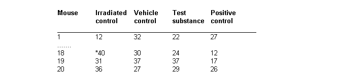
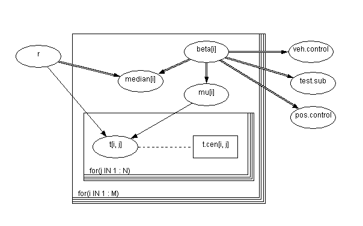
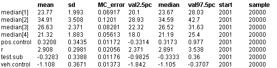

![[mice0]](mice0.bmp) Mice: Weibull regression
Mice: Weibull regression
Dellaportas and Smith (1993) analyse data from Grieve (1987) on photocarcinogenicity in four groups, each containing 20 mice, who have recorded a survival time and whether they died or were censored at that time. A portion of the data, giving survival times in weeks, are shown below. A
*
indicates censoring.

The survival distribution is assumed to be Weibull. That is
f
(t
i
,
z
i
) = re
b
z
i
t
i
r - 1
exp(-e
b
z
i
t
i
r
)
where t
i
is the failure time of an individual with covariate vector
z
i
and
b
is a vector of unknown regression coefficients. This leads to a baseline hazard function of the form
l
0
(t
i
) = rt
i
r - 1
Setting
m
i
= e
b
z
i
gives the parameterisation
t
i
~ Weibull(
t
,
m
i
)
For censored observations, the survival distribution is a truncated Weibull, with lower bound corresponding to the censoring time. The regression
b
coefficients were assumed a priori to follow independent Normal distributions with zero mean and ``vague'' precision 0.0001. The shape parameter r for the survival distribution was given a Gamma(1, 0.0001) prior, which is slowly decreasing on the positive real line.
Median survival for individuals with covariate vector
z
i
is given by m
i
= (log2e
-
b
z
i
)
1/r
The appropriate graph and BUGS language are below, using an undirected dashed line to represent a logical range constraint.

model
{
for(i in 1 : M) {
for(j in 1 : N) {
t[i, j] ~ dweib(r, mu[i])C(t.cen[i, j],)
cumulative.t[i, j] <- cumulative(t[i, j], t[i, j])
}
mu[i] <- exp(beta[i])
beta[i] ~ dnorm(0.0, 0.001)
median[i] <- pow(log(2) * exp(-beta[i]), 1/r)
}
r ~ dexp(0.001)
veh.control <- beta[2] - beta[1]
test.sub <- beta[3] - beta[1]
pos.control <- beta[4] - beta[1]
}
We note a number of tricks in setting up this model. First, individuals who are censored are given a missing value in the vector of failure times t, whilst individuals who fail are given a zero in the censoring time vector t.cen (see data file listing below). The truncated Weibull is modelled using C(t.cen[i],) to set a lower bound. Second, we set a parameter beta[j] for each treatment group
j
.
The contrasts beta[j] with group 1 (the irradiated control) are calculated at the end. Alternatively, we could have included a grand mean term in the relative risk model and constrained beta[1] to be zero.
Data
( click to open )
Inits for chain 1
Inits for chain 2
( click to open )
Results
A burn in of 1000 updates followed by a further 10000 updates gave the parameter estimates
